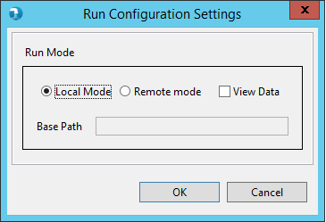
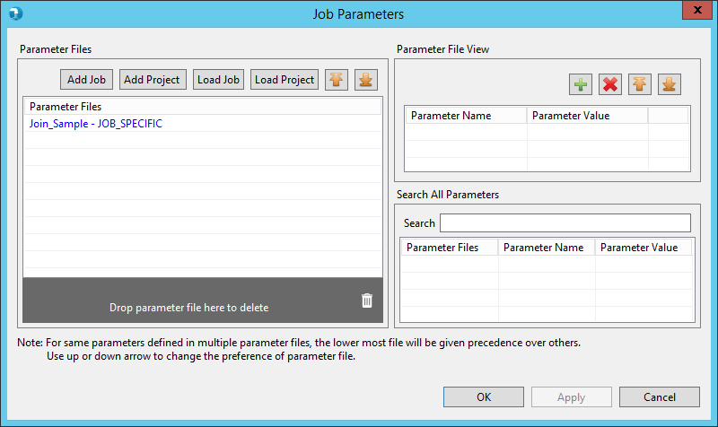
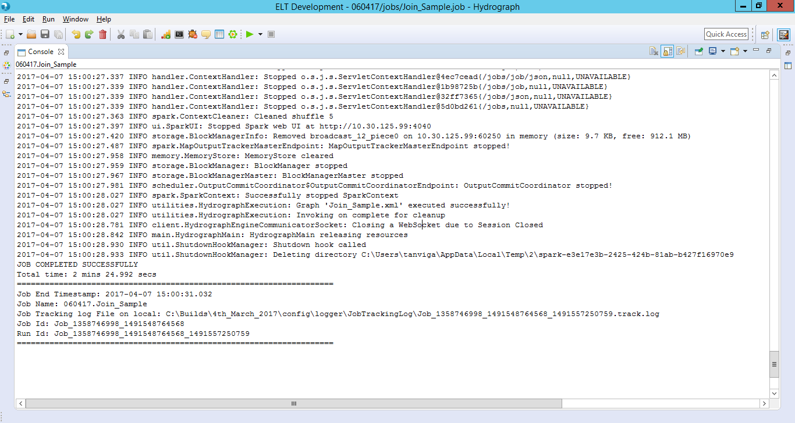

How to Run a Job locally
To Run a job locally, make sure that none of the components in the job have error/warning icon on it.
Click on Run button or press CTRL + R
It opens a grid requesting user to either select Local or Remote Run. Select Local Run option


Watch Job Run log in the console and wait for the job run to complete.
